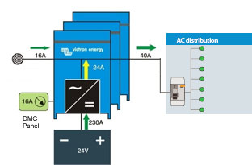
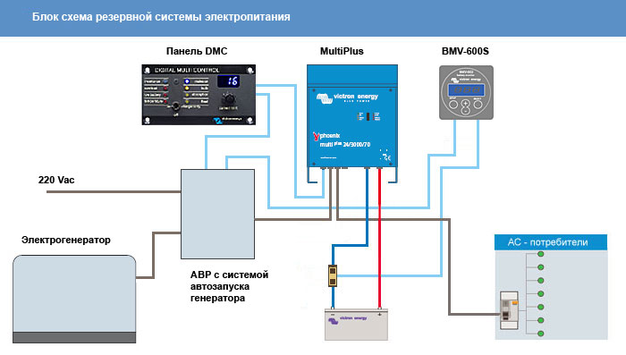

Инверторные системы автономного электроснабжения

Существует несколько решений по системам резервного и автономного электроснабжения коттеджа. Это использование электрогенератора (с системой автозапуска для резервной системы) или инверторной системы электропитания. Мы предлагаем системы резервного и автономного электроснабжения, выполненные на базе инверторов напряжения (инверторно-аккумуляторные системы). Основными компонентами таких систем являются синусный инвертор напряжения и банк аккумуляторных батарей, в котором запасается электроэнергия для дальнейшего преобразования при помощи инвертора напряжения.
В наших системах мы применяем высокоэффективные и надежные инверторы Victron Energy, а также более бюджетные и простые инверторы Tripp Lite. Системы, построенные на инверторах Victron, имеют диапазон мощностей от 0,8 до 100кВА в однофазной системе и до 300кВА в трехфазной системе. Системы, построенные на инверторах Tripp Lite, могут быть только однофазными и с номинальной мощностью 3 или 6кВт.
Основной недостаток инверторных систем электропитания это ограниченное время автономной работы, которое определяется емкостью аккумуляторных батарей и потребляемой мощностью. Этот недостаток могут компенсировать альтернативные источники электроэнергии, солнечные батареи и ветряные генераторы, а также интегрирование в инверторную систему электропитания жидко-топливного электрогенератора с автоматикой запуска.
-
Преимущества перед генератором:
- Необслуживаемая или малообслуживаемая
- Экологически чистая, не требует шумоизоляции
- Большая перегрузочная способность
- Высокая эффективность (КПД до 95%)
- Диапазон постоянной нагрузки (от 0 до номинальной)
- Добавление мощности к источнику переменного тока (зависит от возможностей инвертора)
- Масштабирование системы электропитания (зависит от возможностей инвертора)
- Возможность подключения альтернативных источников электроэнергии с приоритетом их использования
- Мгновенное время переключения
Для инверторных систем резервного электропитания в основном применяются комбинированные инверторы напряжения (инвертор / зарядное устройство), которые имеют в своем составе мощное многостадийное зарядное устройство аккумуляторных батарей и автоматическое трансфертное реле передачи (сеть / инвертор).
Инверторы без встроенного зарядного устройства и трансфертного реле в резервных системах применяются крайне редко но, тем не менее, это возможно. Резервная система должна быть дополнена автоматическим зарядным устройством аккумуляторных батарей и блоком автоматического ввода резерва (сеть/инвертор). В данном случае получаем довольно большое время переключения нагрузки на питание от сети или инвертора.
Инверторы для автономных системДля инверторных систем автономного электроснабжения применяются, как комбинированные инверторы, так и инверторы, которые не имеют в своем составе зарядного устройства и реле передачи. Применение комбинированных инверторов предпочтительнее там, где не используются альтернативные источники энергии, а для заряда батарей применяют жидко-топливные электрогенераторы. Объясняется тем, что для быстрого заряда аккумуляторного банка батарей от генератора требуется мощное специализированное зарядное устройство, которое, как отдельное устройство, может стоить недешево. В комбинированном инверторе все это есть.
Инверторы, которые не имеют в своем составе зарядного устройства и реле передачи, могут применяться в автономных системах электроснабжения там, где электроэнергия для заряда батарей и преобразования в переменное напряжение 220В в основном поступает от альтернативных источников энергии, таких как солнечные батареи и ветрогенераторы. В таких системах автономного электропитания при длительной пасмурной погоде или отсутствия ветра для аварийной подзарядки аккумуляторных батарей от генератора можно использовать более простое и недорогое зарядное устройство.
Аккумуляторные батареиВ инверторных системах электроснабжения аккумуляторы предназначены для накапливания и хранения электроэнергии при наличии сети, и отдачи электроэнергии, когда в сети происходят аварийные отключения. В резервных системах электроснабжения обычно используются герметичные свинцово-кислотные аккумуляторы с технологией AGM. Они имеют большой срок службы в буферном режиме и легко переносят большие токи разряда в течение короткого промежутка времени. Герметичные аккумуляторные батареи (GEL или AGM) можно устанавливать в обычных помещениях (для негерметичных батарей необходимо специальное, хорошо проветриваемое помещение, потому что при своей работе они выделяют взрывоопасные газы).
Общий принцип работы инверторной системы электроснабженияИнверторные системы резервного и автономного электропитания построены на базе инверторов напряжения. Инвертор – это преобразователь постоянного напряжения аккумуляторных батарей в переменное напряжение 220В. При аварийной ситуации в промышленной сети все потребители электроэнергии, подключенные через инвертор, мгновенно перейдут на питание от энергии, запасенной в аккумуляторных батареях. После восстановления внешней сети переменного тока инвертор перейдет на режим трансляции электроэнергии к потребителям и автоматической зарядки аккумуляторных батарей. Время переключения имеет небольшую величину (5-20мс) и зависит от технической характеристики применяемого инвертора.
Добавление мощности к сети (для систем на инверторах Victron)

Системы электропитания - инверторы Victron Energy
|
Инверторы Victron Energy серии Phoenix Inverter, MultiPlus, Quattro предназначены для автономных, резервных и гибридных однофазных и трехфазных систем электропитания с возможностью добавления мощности к источнику переменного тока. Инверторы относятся к профессиональному оборудованию премиум-класса и включают в себя модели с номинальной выходной мощностью от 800ВА до 10000ВА. Параллельное включение от 6 до 10 устройств на фазе (зависит от модели) позволяет масштабировать уже готовые системы электропитания. Продукция Victron Energy позволяет создавать высокоэффективные и высоконадежные системы автономного и резервного электроснабжения. |